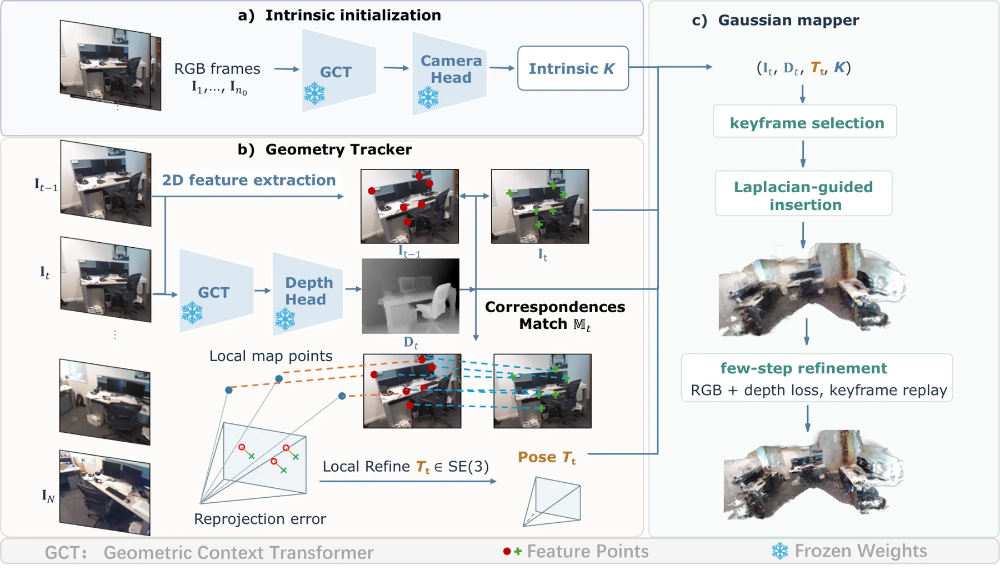
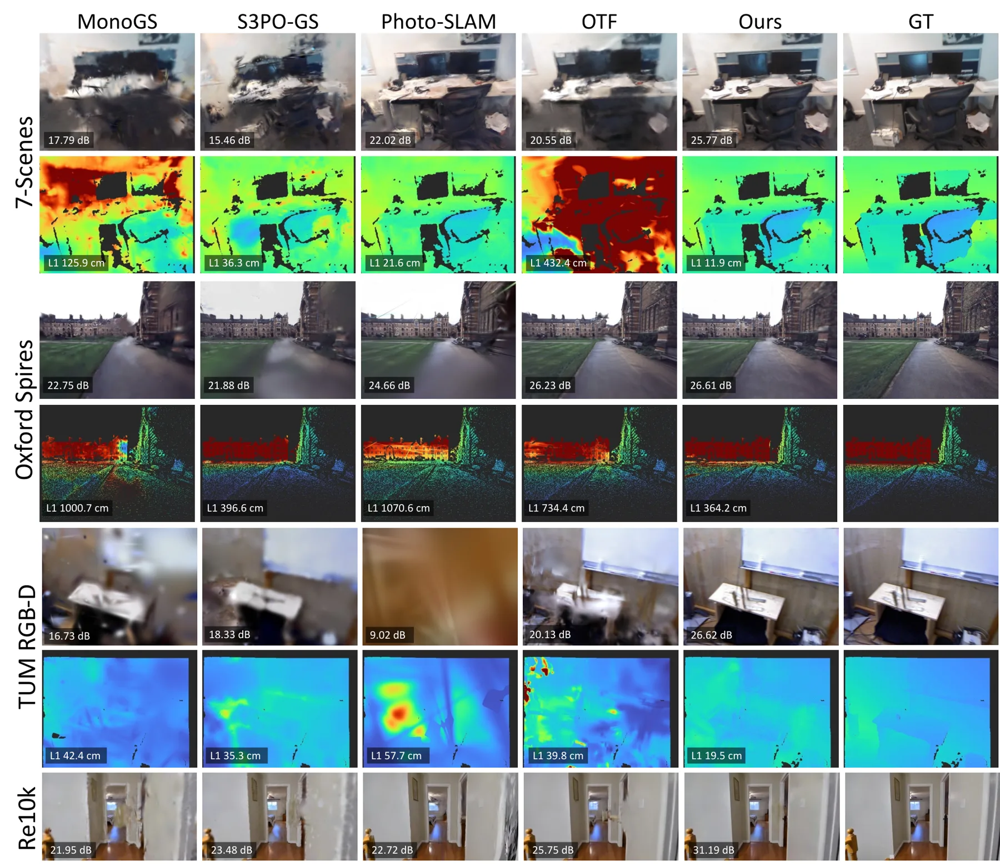
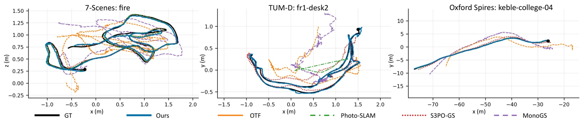

LingGS：把前馈几何预测与相机跟踪解耦的单目高斯 SLAM
LingGS: Decoupling Feed-Forward Geometry Prediction from Camera Tracking for High-Fidelity Gaussian SLAM
把流式 3D 基础模型的深度当测量、位姿交给显式求解器：在 Oxford Spires 上 ATE 从骨干相机头的 5.98 m 降到 0.738 m，PSNR 26.35 dB，7-Scenes 上 PSNR 24.48 dB 比 Photo-SLAM 高 2.57 dB；代价是依赖 ORB 特征，无回环、无动态场景处理。
ATE on Oxford Spires
PSNR on Oxford Spires
tracking time per frame
end-to-end FPS
作者、单位与技术谱系 · Research context
作者与单位
研究脉络
- ORB-SLAM3（Campos, Elvira, Gómez Rodríguez, Montiel, Tardós；IEEE T-RO 2021）方法基座关系：本文的几何求解器直接构建在 ORB-SLAM3 之上，保留其特征提取、匹配与局部 BA，只替换 RGB-D 的虚拟立体残差为直接深度残差。[论文 §3.1 与附录 A.1]
- LingBot-Map（Chen et al., 2026a；arXiv:2604.14141）方法上游关系：提供固定内参与逐帧深度，是本文的「虚拟 RGB-D 传感器」；本文不改其权重，只消费它的几何输出。[论文 §3 与 Table 4]
- GigaSLAM（Deng et al., 2025）与 KiloGS-SLAM（Yu et al., 2026）同期前作关系：同样走「预测深度 + 几何求解器」路线，但受尺度漂移困扰；本文用流式模型的一致深度来回避这一失效模式。[论文 §2 Related Work]
合作网络
- Da Li ↔ Dominik Engel（KAUST 同单位共同署名）Da Li → Dominik Engel关系：共同署名（同一论文、同一单位）[论文首页署名与邮箱]
- KAUST ↔ HKUST(GZ)（跨机构合作）King Abdullah University of Science and Technology → The Hong Kong University of Science and Technology (Guangzhou)关系：共同署名（同一论文）[论文首页与致谢]
- LingGS → ORB-SLAM3 与 gsplat（明确代码级依赖）LingGS → ORB-SLAM3 / gsplat rasterizer关系：明确技术依赖（沿用实现与渲染器）[论文 §3.1、§3.2 与 Reproducibility statement]
作者单位、邮箱、资助编号均取自论文首页与致谢，属原文事实；「ORB-SLAM3 是基座」「LingBot-Map 是数据源」由方法章节的显式表述支持。原文未标注通讯作者与具体分工，本文不推断师生或实验室隶属关系。
方法本质拆解 · What actually changed
是不是微调？
完全不是微调，也不是在数据集上训练任何网络。LingBot-Map 与 gsplat 光栅化器都冻结，系统里唯一被优化的量是逐场景的高斯属性与其位姿轨迹：每来一个关键帧做 30 步 RGB+深度精化，位姿则由每帧的解析雅可比最小二乘更新。也就是说它的「学习」全部发生在离线预训练的基础模型里，本文只贡献估计器结构。
有没有额外约束？
有三类显式约束。观测层：直接深度残差配常数相对误差协方差 diag(σ², σ², (εz)²)，ε=0.05，Huber 核抑制外点，四轮外层迭代重分类内点。结构层：内参 K 由初始帧固定，第一帧定义重建坐标系，地图点在位姿优化中保持固定。表示层：高斯尺度按 s=κz/f_x 与深度绑定、初始不透明度 0.07，深度损失在逆深度空间，等于给近处几何更高权重。
推理/后端到底做了什么？
推理是逐帧在线流水线：ORB 提取与匹配 → 位姿最小二乘（四轮）→ 关键帧判定 → 拉普拉斯引导插入新高斯 → 30 步关键帧重放精化。没有全局 bundle adjustment、没有回环、没有测试时自适应；ORB-SLAM3 自带的局部 BA 仍在，但只作用在稀疏地图点上。因此它的后端不是「新求解器」，而是「把已有的稀疏前端与稠密深度接在同一目标函数里」。
方法本质是什么？
本质是把基础模型的深度降级为测量、把位姿升级为被显式估计的变量，从而把误差从「网络回归的位姿偏差」转移到「可用鲁棒核与协方差建模的观测残差」。它改变的不确定性是位姿与深度之间的相对权重：虚拟立体模型让权重随 z⁻⁴ 隐式变化，直接残差让它随 z⁻² 显式可控。它没有做的是跨帧全局一致性（无回环）、动态物体剔除与在线标定，这三件事仍留给外部系统。
输入单目 RGB 与冻结流式基础模型的逐帧深度；把 ORB-SLAM3 的虚拟立体残差换成带相对误差协方差的直接深度残差并联合优化位姿；再用拉普拉斯引导插入与 30 步 keyframe replay 建高斯图；直接效果是同深度下位姿误差降一个量级、PSNR 提 2–3 dB。

结论与问题Conclusion & Motivation
核心结论
LingGS 的主张是：流式 3D 基础模型的深度已经够用，瓶颈在相机位姿，而位姿不该交给同一个网络的回归头。作者把 LingBot-Map 冻结成虚拟 RGB-D 传感器，只取它的深度与内参，位姿改由 ORB-SLAM3 风格的显式求解器在「重投影 + 直接深度」联合残差下估计，再把结果喂给高斯建图器。结果在 Oxford Spires 上 ATE 为 73.8 cm、PSNR 26.35 dB，而同深度下骨干相机头的 ATE 是 598.5 cm、PSNR 20.23 dB；在 7-Scenes 上 PSNR 24.48 dB，比 Photo-SLAM 的 21.91 dB 高 2.57 dB。代价是系统失去了学习的位姿先验：跟踪仍依赖 ORB 特征，弱纹理与重复结构会退化。
动机与问题
单目高斯 SLAM 要同时恢复位姿、几何与外观，而三者互相耦合：深度决定高斯初始化在哪，位姿决定不同帧的观测能否对齐。作者把现有路线分成两类硬伤：稀疏特征或增量地图优化难以做出高保真表面；学习式稠密先验虽然补上了表面，但逐帧深度不保证跨帧尺度一致，需要额外的尺度恢复与几何对齐，而且稠密跟踪与迭代精化会推高在线开销。流式 3D 基础模型本可同时给出一致的深度与位姿，但作者观察到直接采用其回归位姿会出现跨帧错位——即使深度可用，重建质量也被位姿拖住。这就是本文要修的具体失效模式：不是深度不够好，而是位姿没有和深度在同一个几何目标下联合求解。
方法Method
方法总览
系统三段式。第一段由冻结的 LingBot-Map 从初始帧确定固定内参 K，之后逐帧输出深度 D_t，充当虚拟深度传感器。第二段是几何求解器：每帧提取 1200 个 ORB 特征（8 层金字塔），与局部地图点做投影引导匹配，得到 2D–3D 对应后固定地图点、只优化当前位姿，残差由图像重投影和直接深度残差组成，协方差取 diag(σ², σ², (εz)²)、ε=0.05，用 Huber 核做鲁棒加权，四轮外层迭代交替优化与内点重分类。第三段是高斯建图器：按关键帧触发，用拉普拉斯引导的插入权重决定在哪里加新高斯，初始化尺度 s=κz/f_x（κ=2）、不透明度 0.07，然后做 30 步 RGB+深度联合精化，并以 0.2 的概率优先采样最新关键帧做 keyframe replay。
关键技术细节
最关键的改动是把 ORB-SLAM3 的 RGB-D 虚拟立体残差换成直接深度残差。附录 A.1 推导了这件事为什么不等价：虚拟立体把深度编码成右图像坐标，代价函数里深度项的系数按 z⁻⁴ 缩放，且与水平重投影误差存在交叉项，等于给深度加了一个隐式的、随距离剧烈变化的权重；直接深度残差则显式指定 w_z ∝ z⁻²，对应「常数相对深度不确定性」这一假设。作者保留了 ORB-SLAM3 的特征提取、匹配与局部 BA，只替换第三维残差及其雅可比与信息权重，所以系统仍是经典因子图而非端到端网络。建图侧的两个细节值得记：插入权重 w_t(p)=[ℓ(I_t)(p) − ℓ(Î_t)(p)]⁺ 用观测与渲染的拉普拉斯响应差来定位欠表达结构，作者自己说明这只是启发式而非完整的光度不一致度量；深度损失在逆深度空间计算，让小误差近似等于绝对误差除以参考深度平方，从而偏向近处几何。

实验Experiments
实验设置
四个数据集、室内外混合：7-Scenes（7 条室内 RGB 序列，Kinect 深度真值）、Oxford Spires（6 段室外 1000–2001 帧，位姿与深度由地面激光扫描点云投影得到）、RE10K（60 段 71–279 帧的室内外房产视频）、TUM-D（11 条手持序列）。所有帧统一到 518×392，硬件为单张 RTX 4090 加 Threadripper PRO 3995WX。指标包括留出视角的 PSNR/SSIM/LPIPS、Sim(3) Umeyama 对齐后的 ATE、相邻帧 RPE（平移 cm、旋转度）、渲染深度相对真值的平均 L1，以及端到端 FPS。对照为 MonoGS、S3PO-GS、Photo-SLAM（作者把其建图迭代从 8 提到最多 200 以做公平比较）与 OTF；全部用公开实现、相同输入帧。
实验数字与比较
Table 1 给出四组数据集的完整对照。7-Scenes：本文 PSNR 24.48 / SSIM 0.839 / LPIPS 0.293、ATE 8.58 cm、6.99 FPS；Photo-SLAM 21.91 / 0.741 / 0.400、ATE 19.78 cm、5.99 FPS；OTF 20.50 dB；MonoGS 18.94 dB、ATE 29.90 cm。Oxford Spires：本文 26.35 dB、ATE 73.81 cm、RPE_t 0.943 cm、6.40 FPS，Photo-SLAM 22.05 dB 但 ATE 567.71 cm，OTF 23.19 dB 且 ATE 624.06 cm。RE10K：本文 25.73 dB、ATE 2.84 cm、7.94 FPS，OTF 25.20 dB、ATE 8.79 cm。Table 2 的渲染深度 L1 更能说明几何：本文 0.15 / 0.33 / 3.18 m（7-Scenes / TUM-D / Oxford），S3PO-GS 0.17 / 0.57 / 4.47 m，相对降低 11.8% / 42.1% / 28.9%。作者还指出 OTF 的 RGB 渲染有竞争力却在三个数据集上深度误差最高，说明「看起来对」不等于「几何对」。
消融/失败边界
Table 3 在 Oxford Spires 上拆位姿来源：虚拟立体（A）ATE 79.5 cm、RPE_t 1.123 cm，与本文 PSNR 相同（26.35 dB），说明直接深度残差主要买到位姿而非外观；纯 2D 重投影（B）PSNR 掉到 22.90 dB、ATE 升到 162.1 cm、RPE_t 4.723 cm，证明深度必须进入位姿优化而不只是用来反投影地图点；CPU 点面 ICP（C）ATE 307.2 cm、单帧跟踪 138.6 ms；骨干相机头（D）ATE 598.5 cm、RPE_t 15.39 cm，但跟踪只要 9.5 ms。Table 4 把求解器换到四个流式骨干（XStreamVGGT、STream3R、TTT3R、LingBot-Map）上，ATE 分别从 23.277 / 25.560 / 10.57 / 8.224 m 降到 0.773 / 2.332 / 7.29 / 1.224 m，TTT3R 只降 31.0% 而 XStreamVGGT 降 96.7%，说明增益大小取决于骨干自身位姿有多差。失败边界很清楚：无回环、无动态场景，重复纹理或弱纹理处 ORB 匹配会失败；另外把深度噪声固定成 ε=0.05 的常数假设，遇到尺度漂移型深度先验（论文 Related Work 里点名的 GigaSLAM/KiloGS-SLAM 问题）没有对应机制。
局限与迁移Limitations & Transfer
局限与待核验
作者明确承认三条：不做回环闭合、不处理动态场景、依赖 ORB 特征因此在重复或弱纹理环境下跟踪会退化，并把「用学习先验补这块」列为未来工作。我们自己还要打四个问号。第一，Photo-SLAM 的建图迭代被从 8 提到 200、处理速率压到约 6 FPS 后才比较，这个「公平化」会同时改变其 PSNR 与精度，跨方法结论需要按算力对齐重读。第二，Oxford Spires 的参考深度是激光点云投影的稀疏深度，Table 2 的 3.18 m 误差在这种稀疏掩码下含义与 7-Scenes/TUM-D 的稠密真值不同。第三，7-Scenes 上 ATE 8.58 cm 实际输给 S3PO-GS 的 7.30 cm，摘要只强调「Oxford 与 TUM-D 最优」，引用时不能泛化成全面最优。第四，代码写的是「接收后公开」，目前无仓库可复现；每场景 30 步精化、0.2 replay 概率等超参是否对深度质量敏感，文中没有扫描。
与你研究路线的关系
这篇对我们最有价值的不是高斯渲染，而是「学习先验以什么统计模型进入估计器」这一层。它把预测深度写成常数相对误差测量（ε=0.05，w_z ∝ z⁻²），并给出虚拟立体模型隐含 z⁻⁴ 权重的推导——这正好是我们做深度/视差类观测融合时最容易含糊的地方：同一个深度，用不同残差参数化会得到完全不同的信息矩阵。可迁移模块有两个：一是直接深度残差加相对误差协方差的写法，可直接替换我们现有代码里把深度塞进虚拟立体或当成硬约束的分支；二是 Table 4 那种「固定前端、只换位姿来源、跨多个骨干验证」的对照设计，比单骨干消融更能说明增益来自机制还是来自某个模型的偏好。下一步实验可以这样设计：在我们已有的平滑/滤波管线里，对同一段带深度的序列分别用 ε=0.02/0.05/0.10 与虚拟立体模型跑对照，比较 ATE、深度 L1 与后向平滑残差的一致性，并用注入尺度漂移的深度验证「常数相对误差」假设在何种漂移幅度下先崩。

